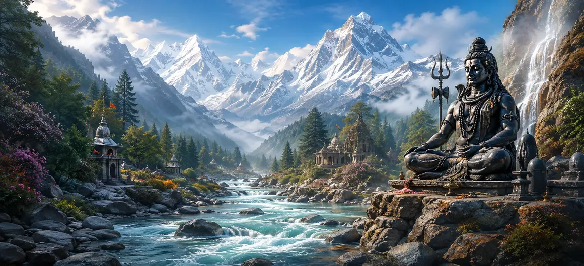

After hearing about the cycles of creation and dissolution, the sages desired to know how the physical world itself became sanctified. They had learned about the creation of worlds, the establishment of Dharma, and the eternal rhythm of cosmic existence, but they now wished to understand the origins of the sacred places that would become centers of divine worship and spiritual realization. The Shiva Purana explains that among all features of creation, certain mountains and rivers were blessed with extraordinary spiritual significance. These sacred manifestations were not merely geographical formations; they were divinely ordained locations through which the presence, power, and grace of the Supreme Lord could be experienced by living beings.
The sacred mountains and rivers described in this chapter serve as bridges between the earthly and the divine realms. Mountains became symbols of spiritual ascent, stability, and meditation, while rivers became symbols of purity, renewal, and the flow of divine grace. Through them, the Supreme Lord provided holy places where beings could purify themselves, perform worship, and progress on the path toward liberation. As the sages listened attentively, they prepared to hear about the origins of these revered mountains and rivers, whose names would be honored for countless ages and whose sanctity would inspire generations of devotees.
As creation expanded, magnificent mountains arose across the newly formed world. These mountains were not created merely to shape the landscape. They served important purposes in maintaining balance within creation and became places where divine energies could be concentrated. The sages learned that many sacred mountains were chosen as abodes of gods, sages, and celestial beings. Through their purity and majesty, they became natural centers for meditation, worship, and spiritual realization.
Among all mountains, Mount Meru was regarded as the most glorious. The Shiva Purana describes Meru as the cosmic mountain standing at the center of the universe. It radiated divine brilliance and served as a focal point for celestial realms and cosmic order. Meru symbolized spiritual elevation and the journey toward higher consciousness. For the sages, it represented the ideal of rising above worldly limitations and approaching the divine presence.
Just as mountains were established as sacred centers of stability, rivers were created as channels of purification and life. Their waters nourished the earth, supported countless living beings, and became symbols of divine grace flowing through creation. The sages learned that certain rivers possessed exceptional sanctity. Bathing in their waters, offering prayers upon their banks, and remembering their divine origin were said to purify the mind and uplift the soul.
The sacred rivers fulfilled both physical and spiritual purposes. Physically, they sustained plants, animals, and human settlements. Spiritually, they reminded all beings of the continuous flow of divine blessings that nourishes the universe. The Shiva Purana teaches that the rivers were not separate from the divine order. Their movement reflected the ever-flowing compassion of the Supreme Lord, carrying life, renewal, and spiritual opportunity wherever they traveled.
The sages were told that many sacred mountains became favored places for meditation and spiritual discipline. Their peaceful surroundings, elevated heights, and distance from worldly distractions created ideal conditions for contemplation and self-realization. Throughout the ages, countless sages performed austerities upon these mountains. Through meditation, devotion, and penance, they attained divine knowledge and strengthened their connection with the Supreme Lord.
The sacred rivers were revered not merely because of their waters but because they carried divine blessings. Pilgrims traveled great distances to bathe in these rivers, believing that sincere devotion and purity of heart could wash away accumulated sins and negative impressions. The sages learned that true purification comes from inner transformation. The holy rivers served as visible reminders of the spiritual cleansing that occurs when one turns toward righteousness and devotion.
The sacred mountains and rivers formed a bridge between the celestial and earthly realms. Through these holy places, divine energies flowed into the world, blessing living beings and supporting spiritual progress. Many of these locations became destinations for gods, sages, and devotees alike. They served as meeting points where earthly life and divine influence could come together in harmony.
The sages ultimately learned that the sanctity of all mountains and rivers originates from Lord Shiva Himself. Their holiness does not arise merely from their physical form but from the divine presence associated with them. By remembering these sacred places with devotion, performing worship there, or even hearing their glories, devotees strengthen their spiritual connection with the Supreme Lord. Thus, the mountains and rivers become living expressions of Shiva's grace within creation.
As the world became populated with living beings, the sacred mountains and rivers gradually emerged as important centers of pilgrimage. Devotees traveled to these holy locations seeking blessings, wisdom, purification, and spiritual merit. The sages learned that pilgrimage was not merely a physical journey. It represented an inner journey toward humility, devotion, and self-realization. Every step taken toward a sacred place reminded the pilgrim of the soul's journey toward the Divine.
The Shiva Purana emphasizes that the sacred mountains and rivers reveal an important truth: nature itself is a manifestation of divine power. The beauty, strength, and life-giving qualities found throughout creation reflect the presence of the Supreme Lord. The sages came to understand that honoring nature is also a form of honoring the Divine. Through reverence for creation, one develops gratitude and awareness of the sacred reality that permeates all existence.
Although ages pass and civilizations change, the sanctity of the sacred mountains and rivers endures. Their spiritual significance continues because it originates from divine will rather than human recognition. The sages learned that holy places remain powerful centers of spiritual influence across countless generations. Through them, seekers continue to receive inspiration, guidance, and opportunities for inner transformation.
Having heard about the sacred mountains and rivers that beautify and sanctify creation, the sages began reflecting on the deeper principles that govern existence itself. They wondered about the fundamental forces behind creation and the relationship between matter, consciousness, and divine power. Filled with curiosity and devotion, they prepared to hear about one of the profoundest teachings of the Shiva Purana—the divine mysteries of Prakriti and Purusha, the principles through which creation manifests and consciousness experiences the universe.
"The sacred mountains stand as pillars of spiritual ascent, and the holy rivers flow as streams of divine grace. Through them, Lord Shiva sanctifies creation and guides souls toward purity, wisdom, and liberation."
The origins of the sacred mountains and holy rivers have now been revealed. Continue to the next chapter to explore the profound mystery of Prakriti and Purusha, the eternal principles through which creation manifests and consciousness experiences the universe.